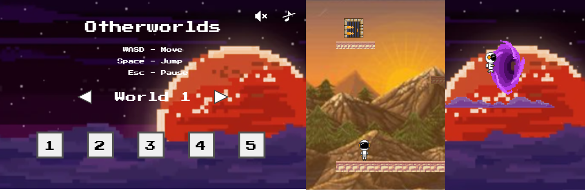

Otherworlds
Otherworlds is a retro-inspired platforming game made using vanilla javascript, html, and css. It is continously being update with more content as time allows. So far there are two worlds: the main character's home world, and a mountainous world. The game has an underlying theme of discovery and adventure
The home screen has the ability to mute sound effects and game music separately, along with level and world select with more levels unlocked as you progress. Game physics relating to player and platform movement and interaction are custom written with each world having its own unique traits and gimmicks.
Click here to see the live site!